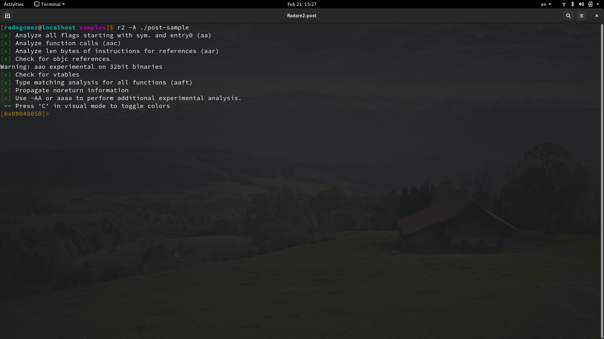

This is the first post out of two that describes the usage of Radare2 to perform basic tasks that relate to binary analysis. That way, instead of explaining what a bunch of Radare commands do, this post goes through a basic workflow from opening a binary file, gather basic information about it, dissasemble it, explaining and working with the different modes that Radare2 offers and explore the disassembled binary. NOTE: Debugging a binary file deserves its own post so it will be covered in a future post.Let's begin: What's Radare2?
Radare2, also known as r2, is the integration of a set of Unix-like, open source, tools to perform binary analysis from different standpoints of view. As any Unix-like application, r2 provides a command-line inteface to interact with. There exist GUIs such as Cutter, which is powered by Rizin (a fork of r2 focused on usability). Because of its capabilities, r2 can be seen as: * A reverse engineering framework. * A forensics tool for binaries. * A debugging tool. * An exploit development framework. * and much more... You can get r2 from its Official GitHub repo. Instructions about how to clone it, install it and set it up can be found there. If you wish to read a more extended documentation about r2, you can go through its Official book as well.Before we jump into it:
For this series of posts, we are going to use the following simple C program: ┌ │ │ int sum(int x, int y){ │ return x + y; │ } │ │ int mul(int x, int y){ │ return x * y; │ } │ │ int main(){ │ int a = 10, b = 5, c = 0, d = 0; │ c = sum(a ,b); │ d = mul(a, b); │ │ if(c < d) │ return c; │ else │ return d; │ │ return 0xdefea7; │ } │ └ NOTE: In this series of posts we will be working with x86 binaries under the Linux OS so, the code above was compiled with the following command: ┌ ┐ │ $ gcc -m32 -o post-sample post-sample.c │ └ ┘ Where -m32 is the compilation flag used to specify that we want gcc to compile our code for x86 architecture (32 bits). So we have now an x86 binary ready to be analyzed with r2.Opening a binary with Radare2
As mentioned before, r2 is a set of Unix-like tools, so from this point everything is going to be achieved with commands. The simpliest way to open a binary with r2 is by just providing to r2 command the name of our binary file without any other fuse (aka flag): ┌ ┐ │ $ radare2 file-name │ └ ┘ or ┌ ┐ │ $ r2 file-name │ └ ┘ By doing it this way, r2 is just going to open the binary file without performing any sort of analysis to it (more on this below). To see the different fuses that r2 accepts when launching it, you can use the command: ┌ ┐ │ $ r2 -h │ └ ┘ The fuse that we are going to be using the most when working with r2 is -A, that way the command to open our file is: ┌ ┐ │ $ r2 -A ./post-sample │ └ ┘ When reading the help for the commands available, we see that for the fuse -A the help says that "run aaa command to analyze all referenced code". This means that first it opens the binary with radare2 and then it runs the r2 command aaa. One of the outputs from running aaa command is the creation of flags (as radare2 call them). With aaa command, r2 goes through the provided binary and for everything that found interesting it creates a flag to reference it. For example, it creates flags for functions, variables, sections and so on. That's the way r2 makes a 'recognition' of the binary and its properties. It also gathers useful information about the binary in question, such as metadata associated with it, compilation information such as compilation flags used, compiler version, timestamps, binary size, sections, the system used for the creation of the binary, exploitation mitigations status, permissions and more. Notice that you can get the same result by opening the file without the -A flag and then run the aaa command manually once you are in r2. Once we open our file, we get the following result:  The output that is displayed is the result of the option -A.Radare2 modes of operation.
In general terms, we could say that Radare2 has 2 modes of operation: * Command mode * Visual mode Command mode: This is the default mode within r2. When in this mode, all r2 commands are available. Visual mode: This mode provides a set of different capabilities in which you can see and interact with the binary and its information. As its name suggests, the information is outputed in a more visual and graphical way. There are several differences of how each mode works, commands, options and so on, but the most important difference that you have to get in mind is that the available commands between modes differ in the total number of them and what they do. In command mode, all r2 commands are available whereas in visual mode, there are less commands available but, there are commands that perform a different thing between modes. In other words, in visual mode you have a set of commands that are less than the ones available in command mode, some commands do the same in both modes, but there are commands that in visual mode do a total different thing. Understanding that and having it in mind will save you several errors and time :D We are going to start with command mode and then we'll move to visual mode (which is the mode that I actually use the most).Working in command mode
Once we open our binary, the default mode is the command mode. You can see that an hex number appears in the r2 promt, that hex number (which varies between platforms such as Windows, Linux, etc) is our current location (address location) within the binary, also known as our current seek.Displaying information
As our binary has been already analyzed, the -i command- displays a bunch of information collected during r2 analysis. ┌ ┐ │ [0x08049050]> i │ └ ┘ You can clear the screen with the command, well, ***-clear-***: ┌ ┐ │ [0x08049050]> clear │ └ ┘List functions
One very useful command is the -afl command-. It's used to list all functions that r2 found in the binary: You can see the functions of our program referenced as sym.sum, sym.mul and main. Those are the flags mentioned before, it's a kind of tag created by r2 and used to reference useful properties found in the binary. This information wouldn't be available if we do not perform the analysis either by opening the file with the -A option or by running the aaa command in radare2. Another nice way to list all the functions with a bit more of information presented like a table is by using the -afll command-.Printing the disassembled binary.
One of the main functionalities used in r2 is the disassembler. There are different ways to display the disassembled code in r2, the simpliest one is just using the -pd command-, which stands for print disassembly. The-pd command- prints the disassembled code of the current location. You can see that it displays just a part of all the disassembly code, that is because of the block size. The default value of the block size is 0x100 and can be set with the -b command-. ┌ ┐ │ [0x08049050]> b new-size │ └ ┘ You can print the disassembly code of all the content of a function regardless if it fits or not in the block size. To print a disassembled function you can use the command: ┌ ┐ │ [0x08049050]> pdf @function-flag │ └ ┘ Where function-flag is the flag that r2 assign to our function (the ones we saw when listing the functions previously). Notice that pdf stands for print disassembled function. That way, in order to print the disassembled code of main, we run: ┌ ┐ │ [0x08049050]> pdf @main │ └ ┘The same way, we can print the content of sym.mul and sym.sum:
Getting help.! The ? command.
If I want you to remember something about this post is this: when in doubt, use the -? command-. ┌ ┐ │ [0x08049050]> ? │ └ ┘ It diplays help for r2 commands. But it goes further, you will see that there are commands composed of more than one character, such as pdf, and talking about pdf, we saw that pd does print disassembly and pdf does it as well but of a function. Those two commands belong to the print disassembly commands. Like pd and pdf, there are other commands that kind of belong to a "category" of commands, like debugging commands, register commands, print mode commands and so on. And all of them look similar within their categories. Let's say you want more info about print disassembly commands, you can get such information by running: ┌ ┐ │ [0x08049050]> pd? │ └ ┘Following that logic, you can get help not only on a specific command, but about a "category" of commands. There are a lot of other commands within the command mode. We are going to go through some of them but they happen to be more useful when they are used in visual mode so, we are going to see them in the second part of this posts. Anyway, with the information at this point, you should be able to play around with commands, getting help about them and experiment to see what they do.
References.
[Radare2 Official Book.] [Cutter Github Repository.] [Rizin Github Repository.]